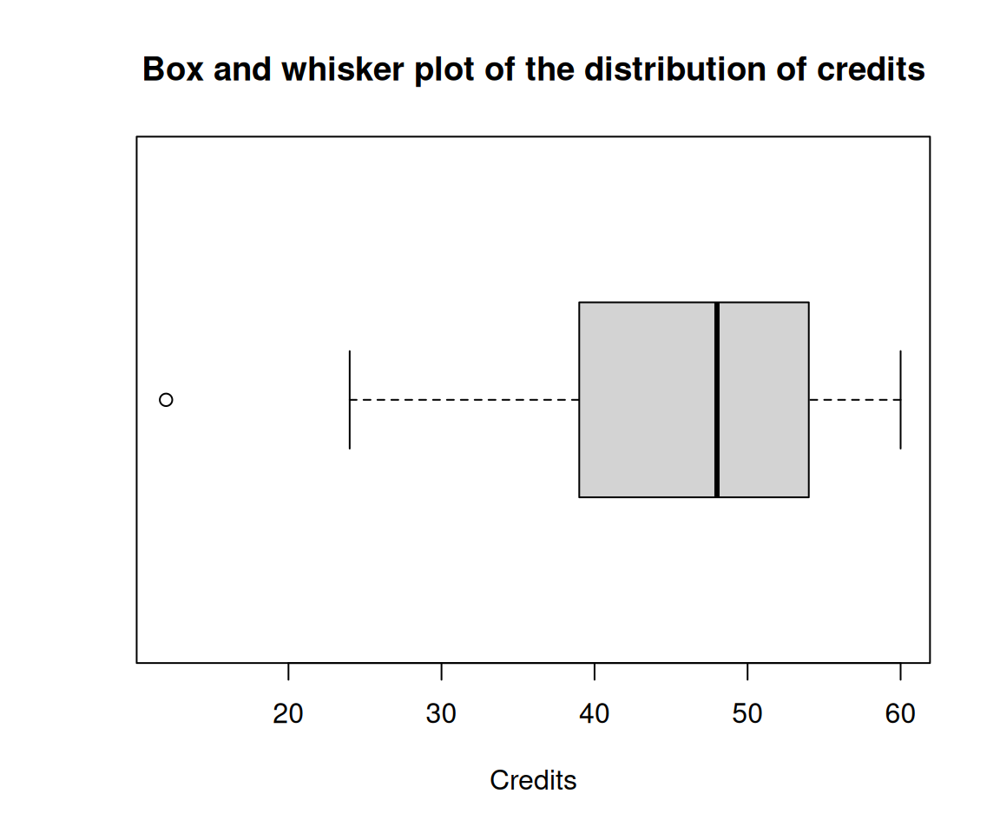
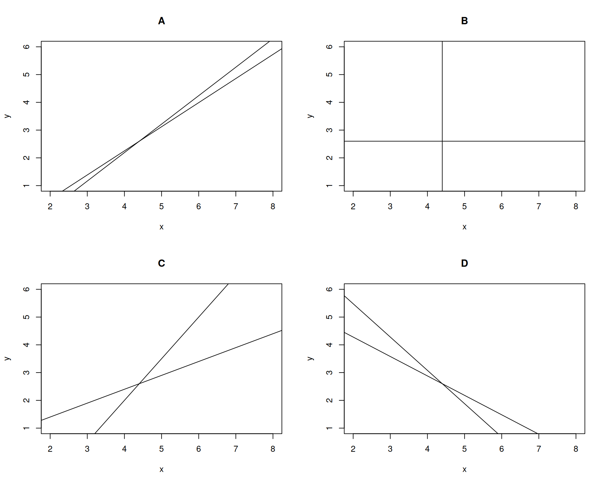

Descriptive Statistics and Regression exam (2022/03/11)
Exercise 1
The table below shows the number of credits obtained by the students of the first year of the physiotherapy grade.
48, 52, 60, 60, 24, 48, 48, 36, 39, 54, 54, 60, 12, 46Compute the median and the mode and interpret them.
Draw the box and whiskers plot and interpret it. Are there outliers in the sample?
Can we assume that the sample comes from a normal population?
If the the second year the mean of credits obtained is \(102\) and the standard deviation is \(12.5\), which year has a higher relative dispersion?
Which number of credits is relatively higher, 50 in the first year, or 105 in the second year?
Use the following sums for the computations:
\(\sum x_i=641\) credits, \(\sum x_i^2=3.1901\times 10^{4}\) credits\(^2\), \(\sum (x_i-\bar x)^3=-4.015806\times 10^{4}\) credits\(^3\) and \(\sum (x_i-\bar x)^4=1.6726526\times 10^{6}\) credits\(^4\).
\(Me = 48\) credits and \(Mo = 48\) and \(60\) credits.
\(Q_1= 39\) credits, \(Q_3= 54\) credits, \(IQR=15\) credits, \(f_1= 16.5\) credits and \(f_2= 76.5\) credits.

12 credits is an outlier.
\(\bar x=45.7857\) credits, \(s^2=182.3112\) credits\(^2\), \(s=13.5023\) credits.
\(g_1=-1.1653\) and \(g_2=0.5946\). Thus, we can assume that the sample comes from a normal distribution as the coef. of skewness and the coef. of kurtosis fall between -2 and 2.First year: \(cv=0.2949\). Second year: \(cv=0.1225\). Thus, the first year has a higher relative dispersion as the coef. of variation is greater.
Standard score for the first year: \(z(50)=0.3121\)
Standard score for the second year: \(z(105)=0.24\)
As the standard score of \(50\) the first year is greater than the standard score of \(105\) the second year, 50 credits in the first year is relatively higher than 105 credits in the second year.
Exercise 2
The Regional Ministry of Health of the Community of Madrid realizes a possible relationship between the level of air pollution and the number of cases of pneumonia in the population in the first 10 weeks of the year. To verify this, the variable \(X\) registers the number of pollution meters that exceed the pollution limits each week, and the variable \(Y\) indicates the number of people affected by pneumonia in each week.
| X | 3 | 3 | 5 | 6 | 7 | 8 | 3 | 4 | 2 | 3 |
| Y | 2 | 1 | 2 | 3 | 6 | 6 | 2 | 2 | 1 | 1 |
Are the number of people affected by pneumonia and the number of meters that exceed the pollution limits two linearly independent variables?
According to the linear model, how does the number of people affected by pneumonia change in relation to the number of meters that exceed the pollution limits?
Justify whether or not the linear relationship between the two variables is well explained and in what proportion.
According to the exponential regression model, how many people are expected to be affected by pneumonia a week with 5 meters exceeding the pollution limits?
Which of the following diagrams best represents the regression lines? Justify the answer.

Use the following sums for the computations:
\(\sum x_i=44\) meters, \(\sum \log(x_i)=13.9004\) log(meters), \(\sum y_j=26\) persons, \(\sum \log(y_j)=7.4547\) log(persons),
\(\sum x_i^2=230\) meters\(^2\), \(\sum \log(x_i)^2=21.1414\) log(meters)\(^2\), \(\sum y_j^2=100\) persons\(^2\), \(\sum \log(y_j)^2=9.5496\) log(persons)\(^2\),
\(\sum x_iy_j=146\) meters\(\cdot\)persons, \(\sum x_i\log(y_j)=43.8653\) meters\(\cdot\)log(persons), \(\sum \log(x_i)y_j=42.8037\) log(meters)\(\cdot\)persons, \(\sum \log(x_i)\log(y_j)=12.7804\) log(meters)\(\cdot\)log(persons).
\(\bar{x}=4.4\) meters, \(s_x^2=3.64\) meters\(^2\).
\(\bar y=2.6\) persons, \(s_y^2=3.24\) persons\(^2\).
\(s_{xy}=3.16\) meters\(\cdot\)persons. That means that there is a direct linear relation between the meters that exceed pollution limits and the people affected by pneumonia.\(b_{yx}=0.8681\) persons/meter. Thus, the number of people affected by pneumonia increases \(0.8681\) persons for every meter more that exceed the pollution limits.
Linear coefficient of determination \(r^2=0.8467\). Therefore, the linear regression model explains \(84.67\) % of the variability of the number of people affected by pneumonia.
\(\overline{\log(y)}=0.7455\) log(persons), \(s_{\log(y)}^2=0.3992\) log(persons)\(^2\).
\(s_{x\log(y)}=1.1065\) meters\(\cdot\)log(persons).
Exponential regression model: \(y=e^{-0.592 + 0.304x}\), and \(y(5)=2.5291\) persons.Diagram \(A\) because the relation is direct and very strong according to the linear coefficient of determination.